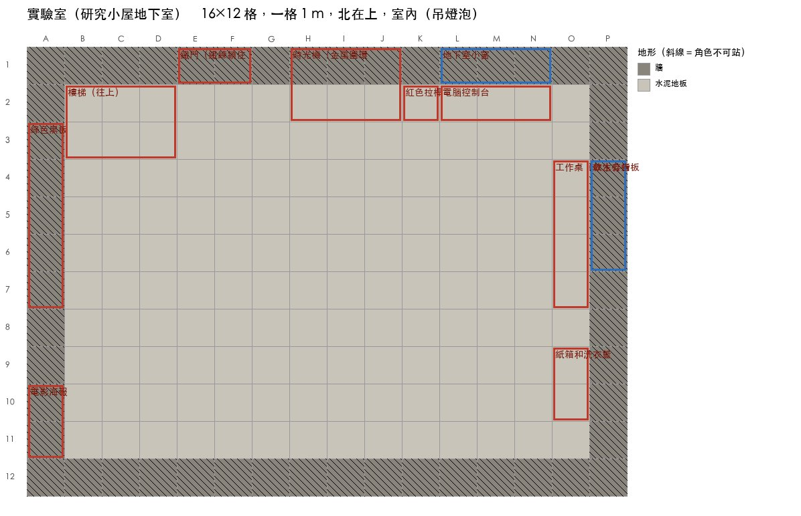

背景描述檢查 EP1-04
程式從地圖（實驗室（研究小屋地下室））算出每格「畫面裡看得到的背景」：從相機往鏡頭對準的方向打一把扇形射線（預設 60°，入鏡角色放不下就加寬），射線撞到牆就停。地圖上黃色區域＝射線實際看到的範圍；黑框＝相機；圓點＝那一刻角色的位置（短線＝面向，淡色＝沒入鏡）。物件落在扇形哪一段決定畫面左右，距離決定遠近。英文那段之後會補在 model 的 prompt 後面。下面的圖是第 5 版舊 prompt 畫的，背景還沒照這份描述畫，只當參考。
整張地圖

設定圖 REF_LAB